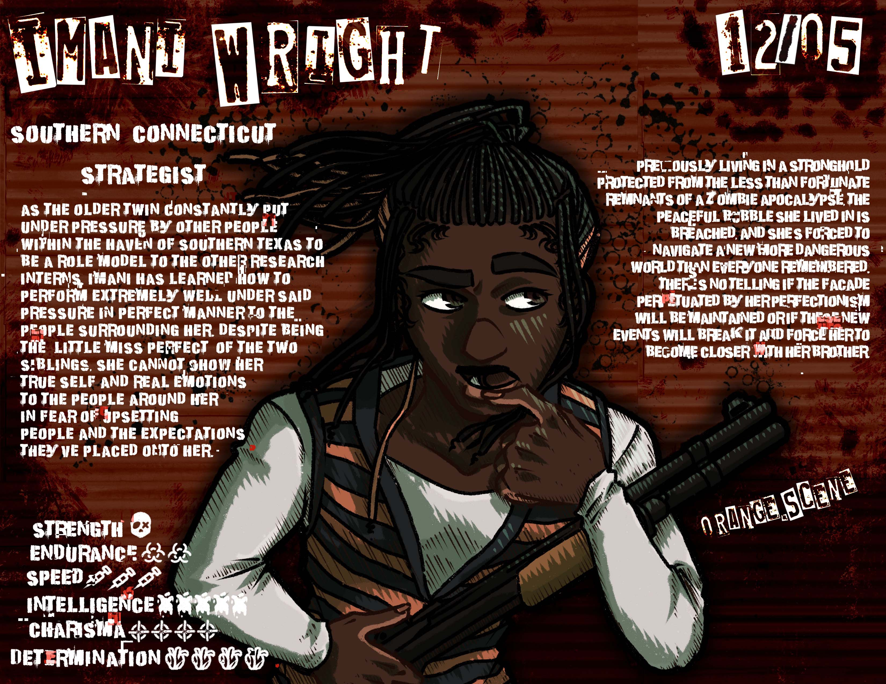
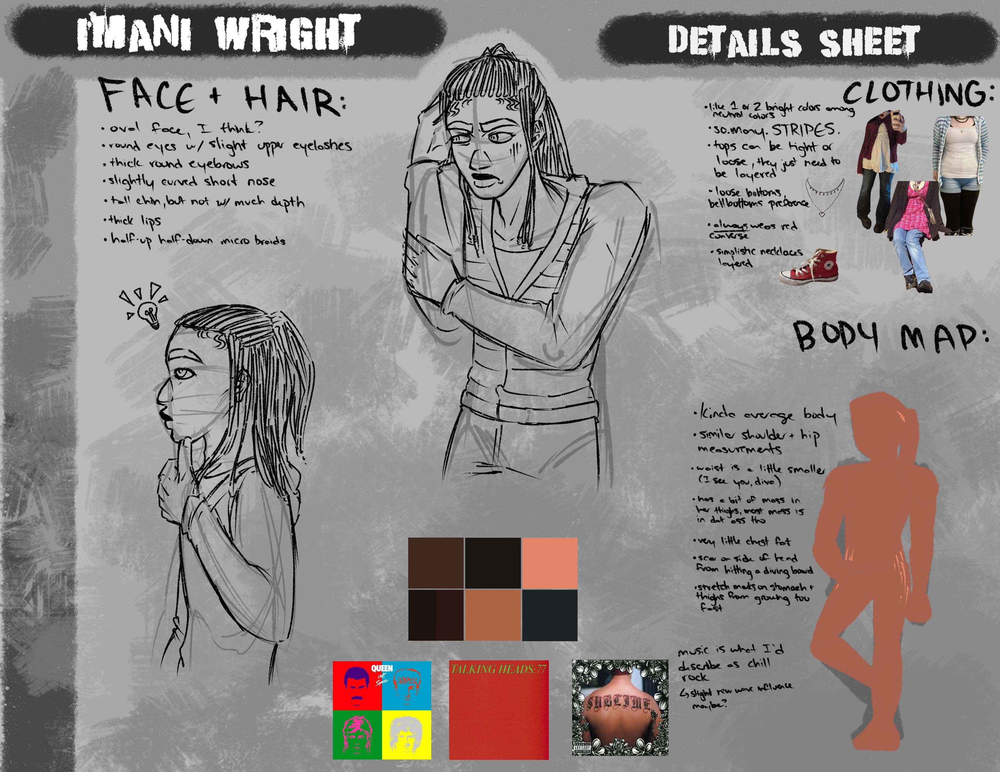

Imani Wright
"As the older twin constantly put under pressure by other people within the haven of southern Connecticut to be a role model to the other research interns, Imani has learned how to perform extremely well under said pressure in perfect manner to the people surrounding her. Despite being the “little miss perfect” of the two siblings, she cannot show her true self and real emotions to the people around her in fear of upsetting people and the expectations they’ve placed onto her. Previously living in a stronghold protected from the less than fortunate remnants of a zombie apocalypse, the peaceful bubble she lived in is breached, and she’s forced to navigate a new more dangerous world than everyone remembered. There’s no telling if the facade perpetuated by her perfectionism will be maintained or if these new events will break it and force her to become closer with her brother."


Some Fun Trivia!
- 20 years old
- was born December 27, 2005
- is 181 cm tall (5'11")
- specifically from Bridgeport, Connecticut
- perfectionism originally caused by the pressure of her parents to be the child who makes them look like good well-rounded parents (and they kinda lost hope with Malik being the perfect child)
- wants someone to validate her feelings and treat her with unconditional love
- doesn't feel the need to pry for information in closed off individuals
- interested in drawing and architecture.. "I am a fucking architect"
- is ambidextrous
- will secretly listen to Vocaloid (her favorite Vocaloid is Miku)
If you want to know what kind of music she likes, listen here!